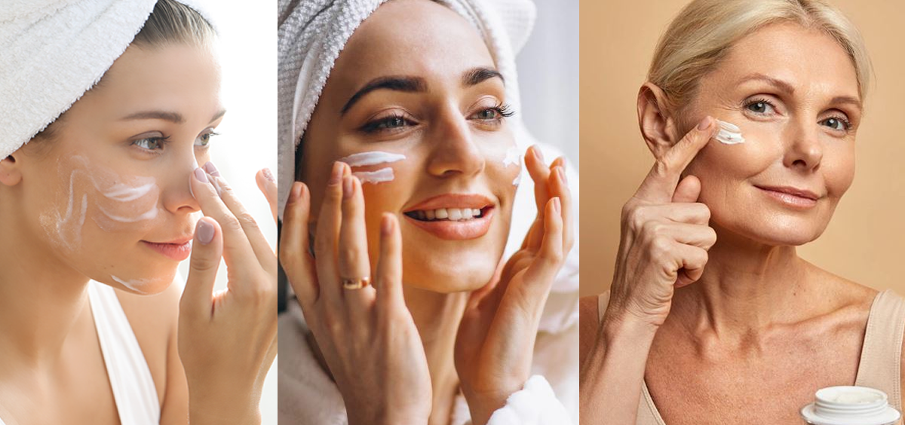

La mejor forma de cuidar la piel es
saber cuales son sus necesidades

Te explicamos cuales son los tipos de piel, como identificar el tuyo, productos para cuidarla y mas

Si quieres saber cual es tu tipo de piel y como puedes cuidarla usando
buenos productos,aqui te damos los mejores tips para tener una piel saludable
Principalmente hay 6 tipos de piel:
Grasa, mixta, seca, sensible, normal y con tendencia al acné.
PIEL GRASA
La piel grasa es una piel que produce un exceso de lípidos. Este desarreglo puede tener su origen en las
variaciones hormonales, o agresiones externas como el estrés o la contaminación. A diferencia de la piel seca,
en este caso las glándulas sebáceas aportan bastantes más lípidos de los necesarios.
Cuidados
Limpia tu rostro día y noche, y también antes y después del ejercicio.
El exceso de grasa tiende a atrapar la suciedad y las bacterias en los poros,
por lo que limpiar la piel y eliminar el maquillaje al final del día es muy importante.

PIEL MIXTA
La piel mixta se denomina así porque es una combinación de dos tipos de piel: normal-seca y grasa o con
impurezas. La piel mixta presenta un aspecto brillante y tiende a desarrollar pequeñas impurezas, sobre todo
en la llamada zona T (frente, nariz y barbilla).
Cuidados
El primer paso para cuidar la piel mixta es la higiene facial diaria, esencial para evitar que el sebo
obstruya los poros en la zona T. Hay que elegir un limpiador que ayude a eliminar la grasa, pero sin resecar
la piel. Limpia el rostro dos veces al día, mañana y noche, evitando usar agua caliente.

PIEL SECA
La piel seca puede manifestarse como áspera, escamosa, enrojecida y puede en ocasiones causar dolor. Ocurre
a menudo cuando no hay suficiente aceite y agua en las capas de la piel. Las causas comunes de la piel seca
son deshidratación, calor, frío o mala alimentación.
Cuidados
La piel deshidratada tiene sed, y necesita una hidratación constante, durante todo el día. Para combatir
la deshidratación se recomienda el uso de cremas que calmen esta sed, con ácido hialurónico y otros ingredientes
hidratantes.

PIEL SENSIBLE
Piel sensible es la denominación de la piel que reacciona irritándose o congestionándose ante la más pequeña
agresión, es decir es una piel predispuesta a reaccionar antes a estímulos externos e internos.
Cuidados
No frotes, ni te laves con una frecuencia excesiva, eso solo irritará la piel sensible y causará una sequedad.
En su lugar, intenta usar limpiadores suaves y delicados, no jabones ni exfoliantes. El maquillaje no está prohibido,
siempre y cuando elijas cosméticos que no provoquen irritación

PIEL NORMAL
La piel normal está bien equilibrada: no es demasiado grasa ni demasiado seca. "Normal" es un término utilizado
ampliamente para referirse a la piel bien equilibrada. El término científico para la piel sana es eudérmica.
Cuidados
En general, se recomienda limpiar la piel 2 veces al día (mañana y noche). Lo importante es que utilices un
producto que se adecúe a las necesidades de tu piel en cada momento.

PIEL CON TENDENCIA AL ACNE
El acné se acompaña generalmente de poros dilatados y de una piel más grasa. En un estadio más avanzado, el rostro
puede presentar pápulas (granos rojos), inflamaciones o pústulas (granos blancos). También es preciso saber que el
acné se desarrolla por brotes.
Cuidados
Cuidado diario de la piel. Para evitar que los poros se obstruyan y que la piel se vuelva demasiado grasosa:
Limpie la piel delicadamente con un jabón suave que no cause resequedad. Puede ayudarle usar un producto con ácido
salicílico o benzoyl para lavarse si su piel es grasosa y propensa al acné.